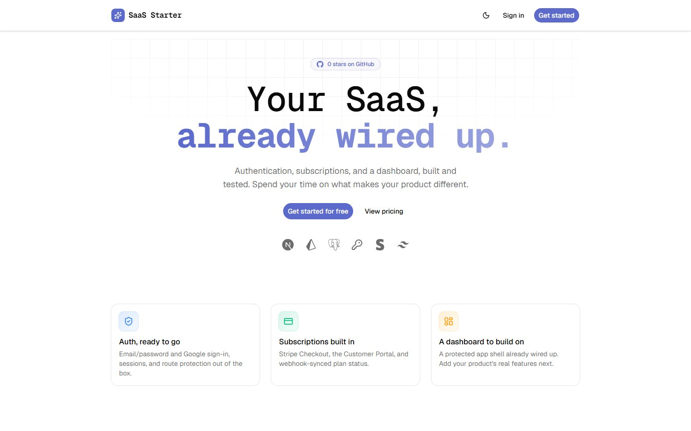
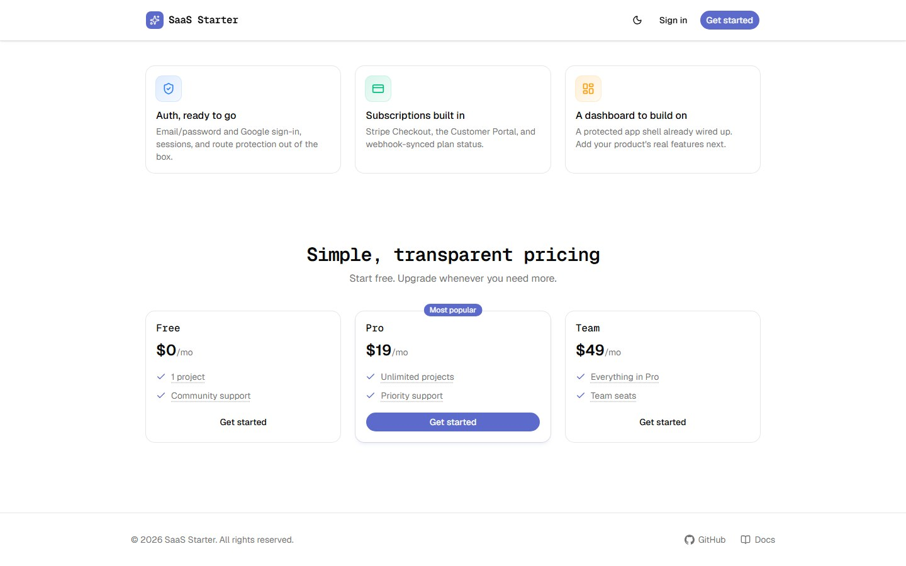
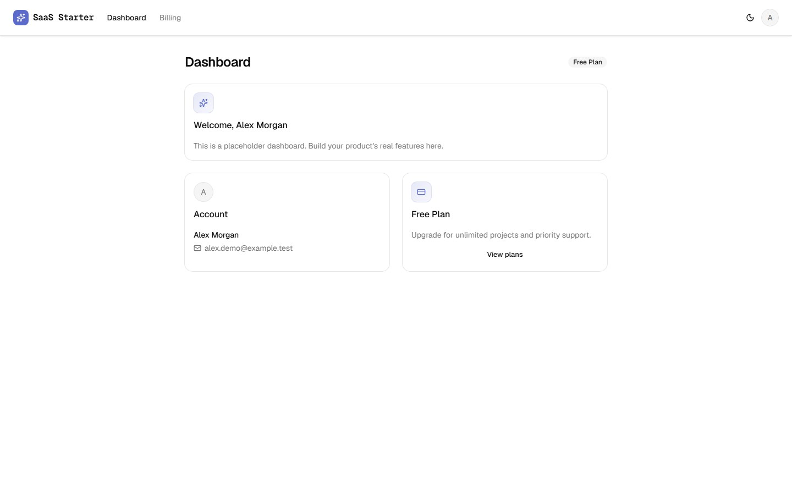
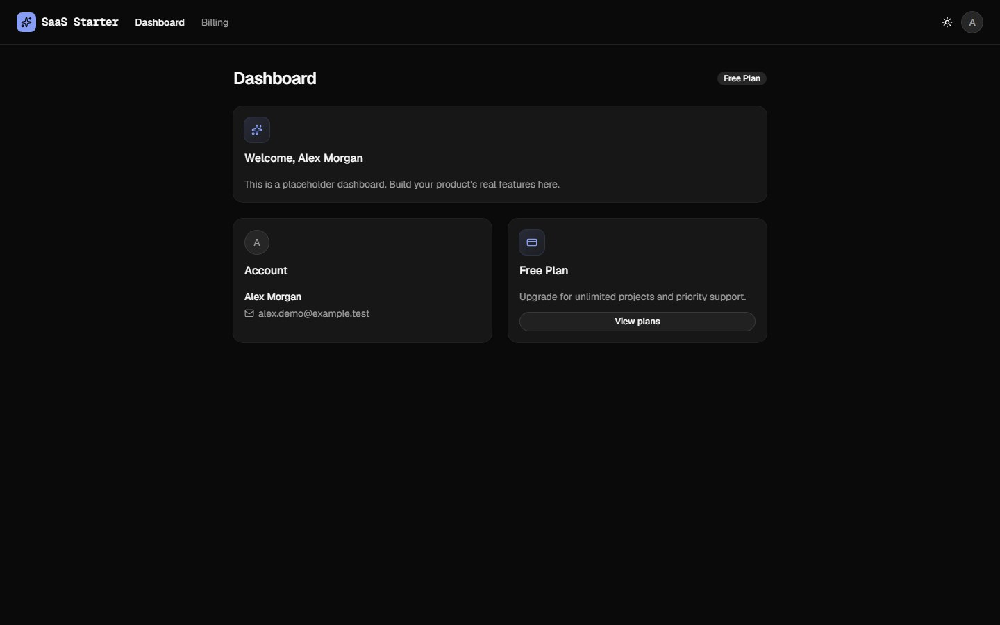
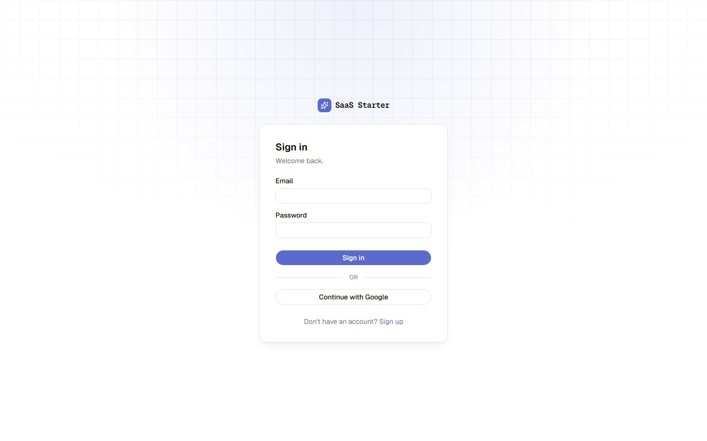
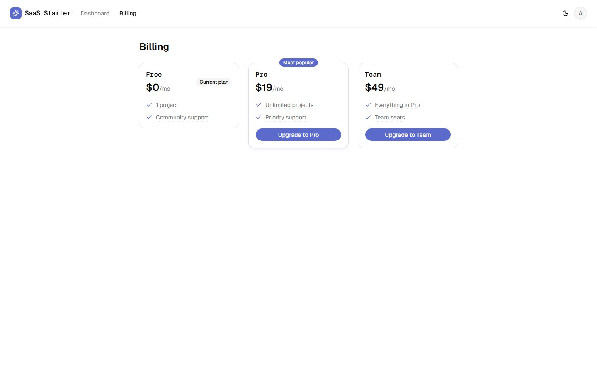
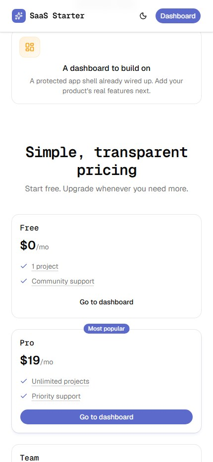
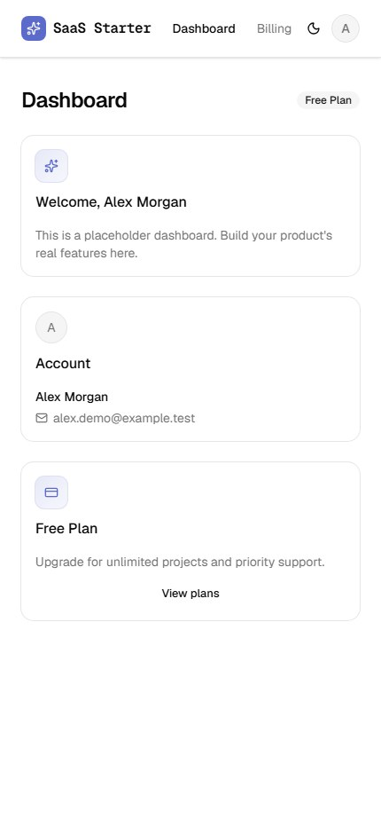

Case study · 2026 · Open source
SaaS Starter — production-ready full-stack SaaS foundation
An open-source Next.js starter kit that ships authentication, subscription billing and a protected dashboard out of the box, so teams can invest their time in the product rather than the plumbing.

01 — Overview
The brief
Almost every SaaS product begins by rebuilding the same foundations: sign-up and sign-in, recurring payments, account management and a secure application shell. This work is costly, error-prone and rarely a competitive advantage.
The objective was a reusable, well-tested foundation that handles these concerns correctly — including the difficult edge cases — behind a clean, easily rebranded interface.
02 — Challenge
Key considerations
- Billing correctnessStripe retries webhooks and does not guarantee order; subscription state must never drift.
- Security by defaultProtected routes, hashed credentials, validated input and rate-limited public endpoints.
- Operational readinessClear failures on misconfiguration and guidance for serverless database pooling.
- Developer experienceA fast, documented setup that a new team can run and extend within minutes.

03 — Solution
What was delivered
- AuthenticationAuth.js v5 with email/password and Google OAuth, bcrypt hashing and proxy-level route protection.
- Subscription billingStripe Checkout and Customer Portal across Free, Pro and Team plans.
- Idempotent webhooksEvents recorded transactionally and ordered by timestamp, so retries and late deliveries cannot corrupt state.
- AI assistantAn optional Claude-powered streaming chat widget with rate limiting and bounded input and output.
- Product analyticsOptional PostHog integration with user identification and sign-up tracking.
- Quality gatesStartup environment validation, Vitest tests, linting, type-checking and CI on every pull request.








04 — Outcome
The result
SaaS Starter provides a production-minded foundation that shortens time to launch for new products. Authentication, payments and the application shell are in place from day one, with the reliability and security details already addressed — leaving teams free to focus on the features that differentiate their product.
- Next.js 16
- React 19
- TypeScript
- PostgreSQL
- Prisma
- Auth.js v5
- Stripe
- Tailwind CSS
- shadcn/ui
- Claude API
- PostHog
- Vitest
- GitHub Actions
Hiring?